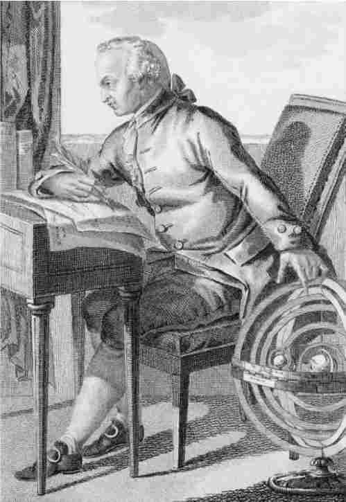

如果运用得当，知性会产生真实客观的知识，但另一方面，知性也会诱人产生幻相。在对“纯粹理性”的探究中，康德试图诊断和批判的正是这种诱惑。他的论证再次同时拥有主观面和客观面。他描述了一种特别的能力，即不合常理地运用理性。另外，他推翻了该能力诱使我们提出的所有关于知识的主张。在“先验辩证法”中，他研究的主题是理性主义形而上学。他将形而上学分为三个部分：第一部分是理性心理学，研究灵魂的本质；第二部分是宇宙论，研究宇宙的本质以及人类在宇宙中的地位；第三部分是神学，研究上帝的存在。进而康德声称，每一部分都按照各自的虚幻论证，朝着谬误而不是真理展开。对这些错误的分析遵循一种普遍的模式。纯粹理性试图确立它被迫趋向的形而上学信条，但每一次努力都逾越了经验的界限，以不受直觉能力约束的方式应用概念。因为只有结合概念和直觉才能形成判断，所以这样的努力无法产生知识。反之，脱离“经验条件”的概念是空洞的。“纯知性概念永远不 允许先验的应用，总是只允许经验 的应用。”（《纯粹理性批判》第1版，246；《纯粹理性批判》第2版，303）与此同时，既然概念自身含有这种“无约束”应用的倾向，知性便存在着一种不可避免的弊病：“纯粹理论”夺取它的功能，范畴由知识工具转变为幻觉，也即康德所称的“理念”的工具。
在这里，为了确切了解康德自认为在“分析论”中已经确立的东西，我们需要再次考察一下先验唯心论。我们在康德的理论中发现了一个关键性的歧义，这种歧义持续出现于第二和第三部《批判》中。
表象与实在
康德经常将先验唯心论描述成如下理论：我们只拥有“表象”的而非“自在之物”（或“物自体”）的先天知识。他的追随者和批评者曾围绕“物自体”展开激烈的争论。摩西·门德尔松把它看做一个特殊的实体，所以表象是一种东西，物自体是另一种。受康德学生贝克的影响，其他人用“物自体”来指代一种描述方法，所描述的正是同一个对象，我们知道它是表象。康德支持第二种解释，这在他与贝克的通信以及《实践理性批判》中的很多段落得以体现。在一封写给《纯粹理性批判》主要追随者的信中，康德说：“所有可以给予我们的客体都可以通过两种方式概念化：一种是作为表象概念化；另一种是作为物自体概念化。”（《康德哲学通信：1759—1799》，103页注）。但是毋庸置疑的是，在这个问题上他并没有给出任何定论，这导致了批判哲学的关键性歧义。
康德还声称，范畴可以应用于“现象”，但不能应用于“本体”。现象是“可能经验的客体”，而本体是只有通过思考才能认识的对象，如果将它描述成经验的对象，则毫无意义。人们很自然地将这两个区别联系起来，假定康德相信表象或现象通过经验可以认识，而物自体仅仅是本体，完全不可知，因为没有什么能仅通过思考来认识。比如，康德说，“本体”这个概念只能否定性地用以指代人类认识的限度，而不能肯定性地指代自在存在之物。所以“将对象划分为现象和本体，将世界划分为感性世界和知性世界……从积极意义上来讲是根本不能接受的”（《纯粹理性批判》第1版，255；《纯粹理性批判》第2版，311）。在此种情况下，“物自体”并非实体，而是一个术语，代表非观察认识这个无法实现的理想。
“表象”表明了康德论述中的歧义性。这个术语有时被用做及物，有时是不及物的。在康德笔下，“表象”有时似乎是“属于”事物的“表象”，它们的实在性是隐藏的。另一些时候，表象又似乎是独立的实体，它们的名称源于我们观察并发现了它们的本质这个事实。在第二种意义上，“表象”一词与我们的物理对象的观念相对应。表象可以被观察到，它存在于空间中；它与其他表象和观察它们的存在者建立了因果联系。表象受科学规律的支配，是或可能是发现的对象。它可能就像看起来那样，也可能并不如此。它可以同时拥有次特征（客体所拥有的仅与特定感官经验相联系的特征）和主特征（属于对象内在构成的特征）（《纯粹理性批判》第1版，28—29）。简而言之，表象拥有物理对象的所有特征。照此理解，认为表象也是属于某物的表象，这肯定是前后不一致的。因为，根据康德自己的理论，被认为是表象之基础的“某物”只能是“本体”，然而关于本体不可能作肯定的描述。尤其是，说本体引起表象或是与表象存在任何其他关系都是毫无意义的（或者至少是空洞的）。（康德的批评者，例如门德尔松和舒尔策就很快抓住这一点，并将其作为先验哲学的主要弱点提出。）有时在康德笔下，每一个对象的确都似乎是某个“物自体”的表象，表象必须“基于现实”，现实本身不仅仅是表象。然而，由于这与他所提出的认识理论（该理论既不容他知道也不容他表达他想说的意思）不一致，我们暂时必须把物自体当成一种非实体。正如我们将看到的，存在着一些相反的理由使康德否认自己正式发表的理论。但是如果我们在此节点上优先接受这些理由以及从这些理由中产生的对立学说，讨论就不可能继续下去。
现象与本体
《纯粹理性批判》的第一版含有对先验唯心论的详细阐释。但是在第二版中被康德删除了，可能是因为这加重了上述歧义性。康德还增加了“驳斥唯心论”一节（见44页），旨在为客观性提供正面的证据，同时也为被归于贝克莱的“经验唯心论”提供反证。经验唯心论认为，“经验”客体不是别的，正是知觉，若超出观察者的经验，科学世界的现实性就不复存在了。所有的经验客体都变成了“理想”实在，在我们关于这些实体的概念之外没有现实性。康德认为，与此相反，先验唯心论是经验实在论的一种形式：它暗示了经验客体是实在的。
康德断言先验唯心论以经验实在论为条件，这一点很难作出解释。比如他辩称，空间和时间都具有经验的实在性，也具有先验的观念性（《纯粹理性批判》第1版，28；《纯粹理性批判》第2版，44）。这可能意味着，如果从经验的角度观察，我们便能认可空间和时间的实在性；而从先验的角度来看，空间和时间便“什么也不是了”（《纯粹理性批判》第1版，28；《纯粹理性批判》第2版，44）。然而，正如康德所承认的，先验观点这一概念极具争议。这不是我们所能采取的观点，因此对它我们也无法获得肯定概念。康德理论简单来说有如下几点：经验客体是实在的，而先验客体是观念的。先验客体不可感知，并且不属于空间、时间和因果性的世界。莱布尼茨的“单子”就是这种客体，因而必须总是存在于想念它的心灵中的纯观念，没有独立的实在性。但是，何为经验客体呢？答案明显是，“任何通过经验被发现或被设定的客体”。
以上陈述的是一种形而上学的观点，与康德的认识理论完全符合。总之，我们在描述经验对象和先验对象的差别时，是描述为存在的对象与不存在的对象之间的差别，还是描述为可知的对象与不可知的对象之间的差别，都无关紧要。因为，借用维根斯坦的话来说，“不可言说的就不要说”。于是，经验客体与先验客体之间的区别似乎又与现象与本体之间的区别一致？前者是可知的，后者是不可知的，因为本体的概念只能被否定地运用，以划分经验的限度。所有的本体都是先验客体，而所有先验客体都仅仅是“可理解的”（即通过经验不可认识），因而都是本体。所以，以下三组区别看来是一致的：现象和本体，经验客体和先验客体，表象和物自体。在对莱布尼茨的长篇讨论，即从“分析论”到“辩证论”的过渡段落中，这一点实际上就是康德所要说的（特别是在《纯粹理性批判》第1版，288—289；《纯粹理性批判》第2版，344—346）。很多学者不接受这种解释，但是在我看来，如果我们不接受，康德就显得过于前后不一，这与他的睿智不符。
所以，发现贯穿于康德“表象”概念的歧义性也出现于他的“现象”概念中，这一点并不让人感到奇怪。“现象”一词有两种解释，有时可以用来指代独立于观察者而存在的实在的可感知客体，有时也可以用来指代一种心理“表征”（或用现在的话说，“意向客体”）。在后一种解释中，现象成了主观的（它是其所似，又似其所是）。确立它的存在就无法保证它的客观性。如此一来，康德的立场（即我们可以认识现象）和他所驳斥的经验唯心论之间就不存在大的区别了。与经验唯心论者相比，就连莱布尼茨也容许我们的“观点”中存在更多的客观性，因为他引入了“有充分根据的现象”这一概念（见24页），根据这个概念，表象的稳定性足以保证存在与似在之间的区别。莱布尼茨研究“现象世界”的方法肯定对康德产生了影响，也许比康德愿意承认的更多。但是他希望在确立表象世界的客观性的道路上走得更远，而不是止步于此。
从所有这些我们可以清楚地看出，对“现象”、“表象”和“经验对象”的唯一可接受的解释是，它们都在物理世界中有所指。表象包括桌子、椅子和其他类似的可见之物；也包括只能通过它们的结果如原子（《纯粹理性批判》第1版，442；《纯粹理性批判》第2版，470）和最遥远的星星（《纯粹理性批判》第1版，496；《纯粹理性批判》第2版，524）才能观察的实体。这些“理论的”实体也拥有实在性，这种实在性来自空间和时间中的存在，以及由范畴所规定的秩序。它们与认识它们的心智结成特定的因果关系，所以它们也是可感知的。换句话说，任何科学研究的对象都是“现象”，所有的现象原则上都是可知的。但除此之外其他东西都是不可知的。“除了感知和经验从该感知推进到（即科学推理）其他可能的感知之外，没有什么被真正给予了我们。”（《纯粹理性批判》第1版，493；《纯粹理性批判》第2版，521）至于本体的观念，它“不是客体的概念”，而是一个“与我们感性的限度不可避免地息息相关的问题”（《纯粹理性批判》第1版，287；《纯粹理性批判》第2版，344）。
绝对者
康德在“辩证论”中意图表明，我们无法认识“如其所是的世界”，意即被视为与认知者的观察无关的世界。如康德所言，我们不可追求“绝对”知识。同时，似乎不可避免的是，我们又应当这么做。每一次通过论证确立某物时，我们都假设了前提的真理性。因此，前提描述了结论为真的“条件”。但是这一条件是否具有真理性呢？这也必须通过论证来确认，并且结论总是，它只有“有条件的”真理性。所以理性（在推理的伪装下）不可避免地会引导我们寻求“绝对”，即其真理性并非来自任何其他根源的最终前提。理性的这个“观念”包含所有形而上学幻相的来源。因为，我们可以合理宣称的所有知识都从属于可能经验的“条件”。渴求关于绝对者的知识就相当于渴求超越使知识成为可能的那些条件。
康德认为，超越的努力是不可避免的。我们不仅寻求超越包含于经验可能性中的那些条件，而且渴望认识“如其所是的”世界，这个世界不受制于实体和原因之类的范畴可能让它从属的条件。事实上，这些努力毫无二致，因为正如“分析论”所指出的，这两组条件是一样的。在任一情形下，理性对“绝对者”的趋近都是对未被观察角度所影响的知识的追求。理性总是努力不预设任何角度去看待世界，正如莱布尼茨所做的。
“纯粹理性”
从康德的认识论出发，理性必须被看做最高的认知能力，所有具有自我认识特征的能力都应归于理性。除了用于知性（形成判断），理性还能合理地以另外两种进一步的方式应用：一种是用于实践，另一种是用于推理。实践理性不能被视为知性的分支，因为它不形成判断（不论断真与假）。但是，实践理性的应用是合理的：我可以理性地思考去做什么，而且我的行动可以是这个过程的合理结果。作为使一项判断导出逻辑结论的实践，推理也是合理的。但是与知性不同，推理并不应用任何属于自己的概念（因为推理似乎给前提“添加一个概念”，因而是无效的）。
只有当纯粹 理性融入了我们的思想时，“幻相的逻辑”才开始迷惑我们。纯粹理性力图用去除了所有经验条件的“理念”而非“概念”作出属于自己的判断，这个事实使纯粹理性独具特色。幻相的逻辑是“辩证的”：它肯定不可避免地导向谬误和自相矛盾。这种谬误倾向不是偶然的，而是固有的。理性无法从“理念”着手去认识世界，并且避免那些等在路上的错误。只要我们一离开可知的经验领域，踏上寻找遥远的“绝对”世界的征程，就已经犯了这些错误。与此同时，我们也无法拒绝诱惑，必定会踏上追求先验世界这徒劳的旅程。正是因为我们拥有的关于世界的观点，才创造了不从感官经验来看待的世界的“理念”。因此，我们总是致力于“为知性的有条件认识找到绝对性，借此使有条件者的统一得以完成”（《纯粹理性批判》第1版，307；《纯粹理性批判》第2版，364）。
纯粹理性与形而上学
康德对思辨形而上学的主题进行了重要的三重划分，这一点我已提请读者注意。在“先验心理学”中，理性产生了自己的灵魂学说；在理性宇宙论中，理性尝试描述“绝对总体”这一形式的世界；在神学中，理性创造了一个统治先验世界的完美存在者的理念。康德将这种划分附会于传统观念，“形而上学真正的研究对象仅有三个理念：上帝、自由和永生”（《纯粹理性批判》第2版，395页注）。自由的理念归于宇宙论，因为所有由该理念而生的形而上学问题都根源于一种信念，即存在着一种道德主体，它同时存在于自然界之中及之外。这是康德最重要的理论之一。但是我会将它留到下一章讨论。
宇宙论
宇宙论的幻相被称为“二律背反”。二律背反是一种特殊的谬论，我们可以在同一个前提下推出一个命题和它的反命题。在康德看来，二律背反不是真正的矛盾，因为构成二律背反的两个命题都基于错误假设，因而都是假的。他将“这种对立命名为辩证的 ，将矛盾命名为分析的 ”（《纯粹理性批判》第1版，504；《纯粹理性批判》第2版，532）。关于为何一个命题和它的反命题都是错误的，康德提供了各种迂回曲折的解释。也许没有必要被这种令人费解的逻辑所羁绊。康德所言的重点在于，在推出二律背反的每一命题时，必须作出同样的虚假假设。他的“批判”目的就在于根除这种假设，并表明这根源于应用了理性的一个“观念”。宇宙论中所涉及的假设是，我们可以思考“绝对全体”这一形式的世界。要实现这一点，就要超越“可能经验”的视角，并且努力从自然以外的视角将自然作为一个整体来看。这一理念的虚幻性显见于以下事实：从这种先验视角的前提，将导出“辩证的”矛盾。
举例而言，假设我允许自己接受整体自然界这一观念，这个自然界存在于空间和时间中。如果我现在试图把这种观点应用于判断，就必须超越我的经验视角，以把握所有经验对象的总体。我必须试着独立于我在自然中的特定视角来设想自然的整体。如果能做到这一点，我就可以问自己：这个总体在空间和时间上是有限的还是无限的？它有没有界限？我发现自己能同样证明它们的正反两个答案。例如，我可以证明世界在时间上肯定有一个开端（否则，一个无限的事件序列肯定已经流逝了，而康德认为“完结了的无限”是个荒谬的观念）。同样我也可以证明世界在时间上必然没有开端（如果有开端，就得有理由表明它在开始时为何会开始，这也就等于荒谬地假设特定的时间拥有因果性质或是“自现”的能力，并独立于占据那个时间点的事件之外）。

图12 康德一只手搭在星象仪上，思考道德律
假设作为整体的世界对自身的存在有所解释，这也会导出类似的矛盾。从这个假设出发，我可以证明世界在因果性方面自我依赖，由一条把每一时刻与前一时刻连接起来的无限的因果之链组成。由于链条开端这一观念——“第一因”的观念——是荒谬的，于是自然引出了“是什么导致了开端”的问题，而这个问题没有连贯的答案。同样我也可以证明世界的原因依附于他物，其存在从某种自身就是“自我的使因”或自因的存在中派生。因为如果没有这样的存在，自然序列中就没有原因可以解释其作用的存在。在此情况下，自然中任何东西都没有解释，而且也不可能说任何东西为何存在。
这类二律背反的根源在于试图超越经验视角而达到绝对有利的一点，从这一点能概观事物的总体（进而概观“自在存在”的世界）。如果我们假设自然是物自体，即如果我们从自然的概念中排除自然借以被观察的任何可能经验的参照因素，二律背反的证明便有牢靠的根基。“然而，由如此得出的命题所引起的对立表明，这个假设中存在谬误，进而使我们发现了作为感官对象之事物的真正组成。”（《纯粹理性批判》第1版，507；《纯粹理性批判》第2版，537）“绝对总体”的理念只适用于“物自体”（《纯粹理性批判》第1版，506；《纯粹理性批判》第2版，534），也就是说，不适用于任何可认识的事物。例如原因这一概念，它可以应用于经验对象的领域中来指明对象之间的关系，但是当它超出该领域应用于作为整体的世界时，就变得空洞了。于是，它便被应用于保证其正当性的经验条件之外，因而不可避免地造成了矛盾。
虽然如此，康德认为这些二律背反不应一经发现即被抛弃，当做错误来轻易排除。生成二律背反的那个总体之假设对于科学中一切最严肃的内容来说，既是原因，也是结果。设想一下我们准备接受关于宇宙起源的“大爆炸”假设。只有鼠目寸光的人才会觉得我们就此回答了世界如何开始的问题。又是什么导致了大爆炸？不管答案如何，都预设了某种东西已经存在。所以，这个假设不能解释事物的起源。对起源的探索将我们带入了无尽的过去。但是结果只有两种可能：或者不能令人满意（在这种情况下，宇宙论如何解释世界的存在 呢？），或它最终走向自因的假设（若是如此，我们就留下了未回答的科学问题而在神学中寻找避难所）。科学本身通过把我们逼向自然的极限而将我们推向二律背反。但是如果不能同时超越这些极限，我又如何能认识它们？
康德详细分析了二律背反，认为两个方面总是分别与理性主义和经验主义相对应。于是他借机再次探究了那些哲学理论中的各种错误。因此而生的论述异常复杂，所引起的哲学评论并不少于第一部《批判》中任何内容所引起的。康德对体系的钟爱促使他将意义与性质全然不同的论点结合在一起。但是在大量的推理背后，是出自一个哲学家笔下、有关科学方法的最敏锐的论述。康德的论述启发了如黑格尔和爱因斯坦那般的各种思想者，并且极少有人不困惑于康德所揭示的问题。我如何能 够 将世界作为总体来看待？如果我不能，又如何解释？如果不能解释一切事物的存在，我又如何能解释任何一个事物的存在？如果永远囿于自己的观点，我如何能洞穿大自然的神秘？
神学
我已经讨论了康德的第一个和第四个二律背反。后者将我们引入神学，并且引入康德随后的一个意见：自因的理念本身是空洞的，将其应用于判断只会产生矛盾。在“理性的目标”这一章中，康德回顾了关于上帝存在的传统论断，并给它们进行了一个现已广为人知的分类。他说，关于上帝的存在仅有三种论断：“宇宙论的”、“本体论的”和“物理神学的”。第一种包括了所有如下论断：它们从一些有关世界的偶然事实以及“为何会如此？”这样的问题出发，假定必然有一个存在者。其中一个版本就是之前所讨论的“第一因”论断：仅当一系列的原因始于一个自因，任何偶然的事实才能最终得以解释。第二种包括为了脱开偶然基础（因为它们可能是错误的，可能会遭到质疑），而尝试从上帝的概念来证明上帝存在的所有论断。第三种论断包括所有来自“设计”的论断，它们以自然中的美好事物为前提，通过类比其原因的完美性来进行论证。
康德认为来自设计的论断“总是值得毕恭毕敬地提及。它最古老、最清楚、最能与人类理性共鸣。它使对自然的研究活跃起来，正如它本身也是从自然中推出自己的存在并不断从中获取新鲜力量”（《纯粹理性批判》第1版，623；《纯粹理性批判》第 2版，651）。在第三部《批判》中他对这个论断为何吸引他作了更详尽的解释。康德不是无神论者，休谟的遗著《自然宗教对话》让他深感不安。《自然宗教对话》德文版的出版正当这部《批判》行将付印之时。康德曾对休谟的动机感到奇怪，但没有考虑他的论断（《纯粹理性批判》第1版，745，《纯粹理性批判》第2版，773）。休谟预示了康德自己对于理性神学的批判。但是他尤其鄙视源于设计的论断，认为它要么不能证明任何东西（因为在自然的完美与艺术的完美之间不存在真正的类比），要么充其量证明了一个并不比他创造的世界更完美的存在。康德对于源自设计的论断也不满意。然而，虽然他将该论断视为无效，但同时又认为它表达了一个真正的预感。所以他尝试从第三而非第一部《批判》的角度出发，为此论断提供全新的阐释。
源自设计的论断被视为一种理智的证据，它永远不可能比它所依赖的宇宙论的证据更加令人信服（《纯粹理性批判》第1版，630；《纯粹理性批判》第2版，658）。因为，只有基于世界拥有解释这个假设，世界才能归因于它。除非宇宙论的证据是有效的，否则这个假设就无足轻重。我们必须表明，我们可以超出自然之外，以假设存在一个超验的、必然的存在者。一切事物的秩序都基于这个存在者。这样一个存在者必定以自身为动因，而且他的存在不能仅仅是偶然的事实，因为若真是偶然，他便成了自然事件之链中的一环，而不是对这些事件的解释。一事物，只有当它的概念暗含着它的存在时，该事物才会必然存在。上帝的存在必须从上帝的概念导出，因为只有通过逻辑联系，概念才能解释任何东西。所以，所有三个论断最终都归结为本体论的论断，告诉我们上帝必须存在，因为存在属于上帝这个概念本身。
以其传统的形式，本体论论断不仅证明了上帝的存在，而且证明了上帝的完美。其他两个论断似乎都无法证明上帝的绝对完美：它们仍须依赖本体论论断提供宗教情感的理智基础。本体论论断如此展开：上帝是一个完美无缺的存在者；此完美必须涵盖了善、力量和自由；但是也必须涵盖存在。一个存在的x的概念是比x更完美的某物的概念，取消了存在也就取消了完美；所以存在即完美；所以从上帝作为完美无缺的存在者的理念，必然得出上帝是存在的。
康德对于本体论论断的反驳由于预示了现代逻辑理论而颇为人知，这种理论认为存在不是谓项。（当我说约翰存在、约翰是秃头、约翰吃牡蛎时，我赋予他两个属性而非三个。）莱布尼茨在讨论偶然性的时候已经认识到，存在与普通谓项大相径庭。虽然如此，他还是接受了本体论论断，并且没有看到这给他的哲学所带来的逻辑结论。说x存在并不能为它的概念增加任何东西：只是表明这个概念有相应的例证。确实，将存在引入某事物的概念已经含有一个谬论（康德甚至称之为矛盾）（《纯粹理性批判》第1版，597；《纯粹理性批判》第2版，625）。因为如此一来，断言该事物存在便成了空谈。这种断言对于从概念到现实没有任何促进作用，因此它没有确认任何事物的存在。本体论论断声称存在即完美。但是它不可能成为完美，因为它并非一种属性。康德认为，如果该论断是有效的，接下来必然推出，上帝存在这个判断表达了一种分析真理。然而，存在并非谓项这一理论意味着，所有存在命题都是综合的（《纯粹理性批判》第1版，598；《纯粹理性批判》第2版，626）。
理性观念的调节性运用
对“幻相的逻辑”进行批判之后，康德继续用相当长的篇幅，并且用一个已完成智力劳动的作家所常有的轻松而开朗的风格，继续论证说毕竟存在着对理性观念的合理运用。诸如绝对总体和必然存在的完美创造者这样的观念，若着眼于它们的“构成性”角色，即把它们视为对现实的描述时，便产生了幻相。然而，正确方法是把它们视为“调节性原则”（《纯粹理性批判》第1版，644；《纯粹理性批判》第2版，672）。如果我们假定这些观念符合实在，那么我们便会被引导去形成真正的假设。例如，秩序和总体的理念引导我们提出日益宽泛、简单的规律。就此而言，经验世界变得愈加容易理解。对理性的这种“调节性”运用是基于经验观点之内的应用。构成性运用则试图超越这个观点，进入理性的幻觉领域。这种矛盾不是根源于观念本身（观念本身并不矛盾，而仅仅是空洞的），而是出自对它们的错误应用。康德有时通过强调理性诸观念的调节性功能，把它们称做理想 。
于是，“至高无上的存在者的理想无非是理性的一种调节 性原则 ，指引我们将世界上所有的联系看成是源自一个完全充足的必要原因”（《纯粹理性批判》第1版，619；《纯粹理性批判》第2版，647）。这样看来，它就是知识而非幻相的来源。它所产生的知识仍然受限于可能经验的条件：换言之，它与范畴相符，而且没有超越范畴的合法领域而进入超验领域。观念“并没有告诉我们对象是如何组成的，而是表明我们应如何在理念的指导下寻求 确定经验对象的构成和联系”（《纯粹理性批判》第1版，671；《纯粹理性批判》第2版，699）。于是，理性从徒劳的思索被拉回到经验的世界，将形而上学的幻相替换为经验科学的实在性。
灵魂
康德关于灵魂以及“自我”概念（灵魂正是在此概念中得到了初步的描述）的论述是他的哲学中最微妙的部分之一。给出的描述包含于两个复杂的论证：第一个在“辩证论”开始的时候，康德在此抨击了关于灵魂的理性主义学说；第二个在第三条二律背反以及《实践理性批判》中，他在其中论述了道德的本质。
探究理性主义之灵魂学说的“纯粹理性的谬误推理”那一部分在第二版中进行了重大修改。这也许是因为批判哲学的这个方面形成了先验演绎之多方面论断的一部分，对于这个部分康德极不满意。康德在“分析论”中的论断始于对自我意识之独特实在性的承认。我对于自己的思想状态有特有的认识，而这就是一种“原始的”或是“先验的”知性行为。理性主义者曾试图从这个特有认识中演绎出一种具体的知识对象理论。他们认为，鉴于自我意识的直接性，自我必须是意识真正的对象。在自我意识行为中，呈现在我面前的是有意识的“我”。我能够保有这种自我意识，即使在怀疑所有其他的事物时。此外，我必然意识到自己的统一。最后，我能直观地感觉到我在时间上的连续性：这不可能产生于对我身体的观察或是任何其他外部的来源。因此，得出以下结论似乎是自然的：仅仅基于自我意识这一点，我就知道自己有实体性、不可分割、持续存在，甚至可能不朽。康德认为这就是笛卡尔的论点。这个结论却也不是“笛卡尔式”意识观的古怪论调。正如所有理性的幻相，它是我们一开始反映面前的材料就被诱入的。每一个理性的存在都必然被引诱，认为自我意识那独特的直接性和不可违背性保证了它的内容。在每一次怀疑中，也许我仍然知道这是我，而且理性使我确信，对自己本质的这种谙熟为对灵魂之非物质性的确信提供了基础。此外，我无法设想自己的不存在，因为每一次尝试这般设想都要求“我”作为设想者。
这种推理是错误的，因为它从统觉纯粹形式的统一移向了灵魂学说所确证的实质统一。“作为范畴基础的意识的统一……将主体的直觉误认做对象，并且将实体的范畴应用于它。”（《纯粹理性批判》第2版，421）虽然统觉的先验统一使我确信，我当前的意识具有统一性，但是关于承载意识的东西，它没有告诉我任何其他内容。它没有告诉我，我是一个与“偶然”或属性相对的实体（即一个独立存在的客体）。（例如，它没有驳斥思想是身体的一种复杂属性这一观点。）“借由简单的自我意识来决定我存在的方式，不管这种存在是作为实体还是作为偶然，都是完全不可能的。”（《纯粹理性批判》第2版，420）如果我无法推断出我是一个实体，那我就同样无法推断出我是不可分的、不灭的或是不朽的。意识的统一甚至不能让我确信，在经验世界中存在着“我”这个词能应用于其上的事物。因为，归纳在统觉的先验统一概念下的自我意识的独特特征，仅仅是关于世界的“观点”的特征。借此描述的“我”并非世界的一部分，而是对世界的一种观察（事物显现的一种方式）。“因为这个我并非概念，而只是对内在感觉的对象的标示，因为我们对它的认识并不经由任何进一步的谓项。”（《未来形而上学引论》，98）于是，研究我们自我意识的特性就不等于研究世界之中 的任何物项，而是在探索经验知识的极限点。“范畴的主体不可能通过思考范畴而获得自己作为范畴之对象的概念。”（《纯粹理性批判》第2版，422）。就我而言，把“我”变成意识的对象，这就和观察我自己视野的极限一样不可能实现。“我”是对我的观察的表达，但是并不指示其中的任何物项。作相反的假设则相当于不合理地从主体过渡到了客体；这就等于假设，作为主体 ，意识的主体同样能成为自己意识的对象。
康德得出如下结论：在“先验心理学”的前提——统觉的先验统一，和它的结论——灵魂的实体性之间存在着断裂。由于前者描述对于世界的观点，后者描述世界中的物项，理性不可能引领我们有效地从这一个走向另一个。无论正确与否，康德的建议为很多关于自我的后继哲学理论，从叔本华到胡塞尔、海德格尔和维特根斯坦，提供了基石。
有时康德会暗示，自我意识的“我”指的是一个先验的对象。因为看起来似乎是，在证明了“我”并非经验世界的一部分后，康德为我们提供了理由，把“我”视为存在于经验之外的物自体的世界。这不是康德之论点的合理结论，相反，这是对康德企图用“我”来揭示的谬误的又一次更微妙的重申。然而，这是康德倾向于赞同的结论，因为他认为缺少了这个结论道德将不可能。康德对实证的灵魂学说的寻求，并非通过纯粹理性，而是通过实践理性（《纯粹理性批判》第2版，430—431）。为了理解这个学说，我们必须探究他对理性主体之道德生活的描述。